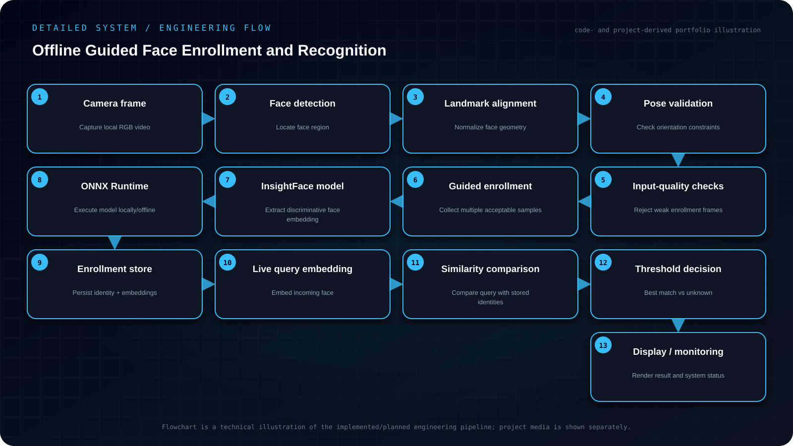

Objective
Build a guided enrollment and recognition pipeline that rejects weak enrollment samples, extracts face embeddings locally with InsightFace/ONNX Runtime and matches identities without a cloud inference service. Initial setup requires model weights; runtime can then operate offline.
- Guide enrollment so stored examples have useful pose and image quality.
- Perform detection/alignment and embedding extraction locally rather than through a cloud API.
- Store identity embeddings and compare live query embeddings against them.
- Handle weak/boundary inputs and return an identity or unknown decision in a live OpenCV loop.
My contribution
- Used OpenCV for the camera pipeline and InsightFace models through ONNX Runtime for face analysis and representation.
- Enrollment guides the user through multiple poses and checks whether an input is suitable before accepting it.
- Recognition runs locally without depending on a cloud service.
System architecture
Camera frame → face detection/analysis → pose and quality checks → embedding extraction → local enrollment store → live embedding → similarity decision → identity/unknown result.

Read the architecture as text
- Camera frame — Capture local RGB video
- Face detection — Locate face region
- Landmark alignment — Normalize face geometry
- Pose validation — Check orientation constraints
- Input-quality checks — Reject weak enrollment frames
- Guided enrollment — Collect multiple acceptable samples
- InsightFace model — Extract discriminative face embedding
- ONNX Runtime — Execute model locally/offline
- Enrollment store — Persist identity + embeddings
- Live query embedding — Embed incoming face
- Similarity comparison — Compare query with stored identities
- Threshold decision — Best match vs unknown
- Display / monitoring — Render result and system status
Implementation
Used OpenCV for the camera pipeline and InsightFace models through ONNX Runtime for face analysis and representation. Enrollment guides the user through multiple poses and checks whether an input is suitable before accepting it. Recognition runs locally without depending on a cloud service.
Engineering decisions
The system was designed around guided enrollment because improving the stored reference data is often more reliable than trying to compensate for poor enrollment only at recognition time.
Challenges & debugging
Recognition quality depends heavily on enrollment quality. Accepting arbitrary frames can create weak identity representations, especially when pose or capture conditions are poor.
Validation
Tested live camera behavior and boundary cases such as weak inputs and pose inconsistency. The important validation target was not only successful matches, but whether the enrollment pipeline rejected samples that should not be stored.
Outcome & boundaries
Created a local camera-to-identity workflow with guided enrollment and weak-sample rejection.
Project sources
Implementation notes and available project sources. Public code is linked where available; descriptive diagrams are not independent validation.


{kind=link}